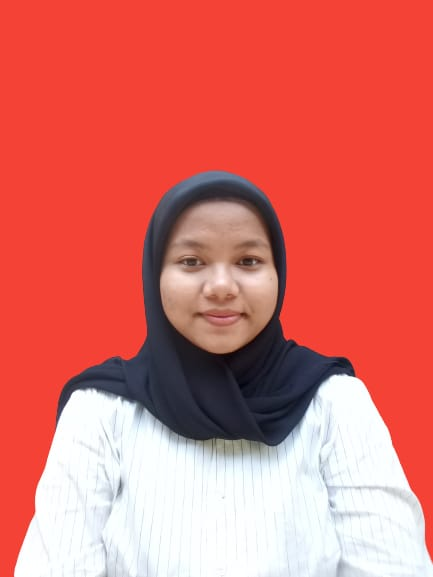

CURRICULUM VITAE
DATA PRIBADI

Name : Dessy Fitriyani Dewi
TTL : Sumedang, 14 Desember 2001
Umur : 19 Tahun
Alamat : Jl.kvl.k mandor II No.003 03/05, Pondok Jaya, Cipayung, Depok
Nomor Hp : 085921656715
Email : dessyfitriyanidewi14@gmail.com
PENDIDIKAN
Nomor
Nama Sekolah
Jurusan
Tahun Lulus
1.
RA Riadul Jannah
-
2007-2008
2.
SDN Palasari
-
2008-2014
3.
SMPN 9 Depok
-
2014-2017
4.
MA Arrahmaniyah
MIPA
2017-2020
5.
STT Terpadu Nurul Fikri
Sistem Informasi
2020-sekarang
PENGALAMAN KERJA
Praktek mengajar di MI Sirijul Athfal 1 (2019)
Pelayan Foodcourt Warung Bang Unang (2017)
KETERAMPILAN
Microsoft Office (Word,Exel,Power Point
Mampu berkomunikasi dengan baik
Mampu bekerja dengan tim maupun individu
PENGALAMAN ORGANISASI
Majelis Perwakilan Kelas (MPK) 2016-2017
Orgaisasi Siswa Intra Sekolah (OSIS) 2017-2019
Siswa Pecinta Alam (WAPALA) 2017-2020
Anggota Beasiswa Amanah Takaful 2020